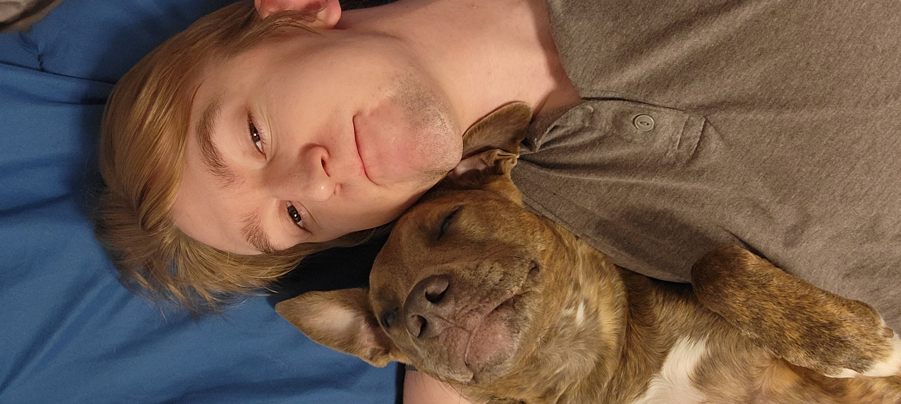
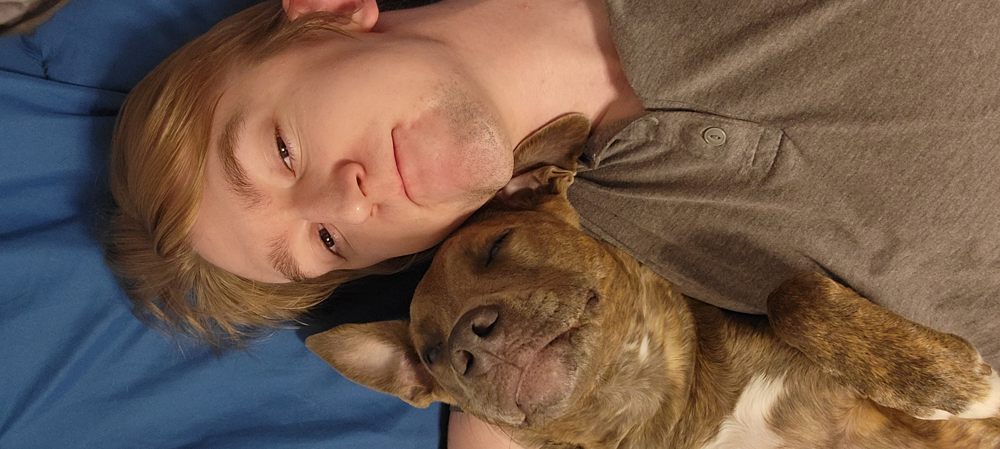

My name is Austin Taylor
A brief summary about me!
I was born and raised in Georgia and have moved around the United States a lot. Being in a military family will lead to a lot of moving around! I eventually ended up landing here in Washington State! Once I graduated high school, I have held lots of retail, security and catering jobs. I have always had a passion for technology and computers. Hence why I am looking into a degree in IT!